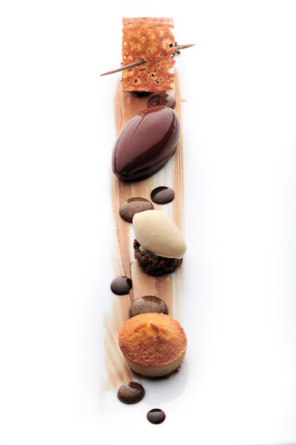
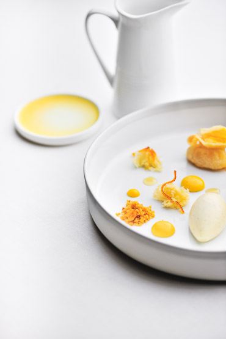

To set the mood, the restaurant looks like a gingerbread house found in the small botanical garden in the city centre of Antwerp. Van Damme takes deserts and sweet dishes to a new level and got rewarded for this with a first Michelin star in November 2010. This young chef has also a soft spot for Japan. It all began when he first visited Tokyo for a culinary get-together with ex-El Bulli chefs from around the world. Tokyoites can savour Van Damme's creations in the Four Seasons Marunouchi in Ginza or buy his cakes at the Takase Bussan department stores in Japan. When in Antwerp, try his sweet version of tempura of orange while sipping from a glass of excellent wine. In the end, it's all about living the sweet life, isn't it.
 